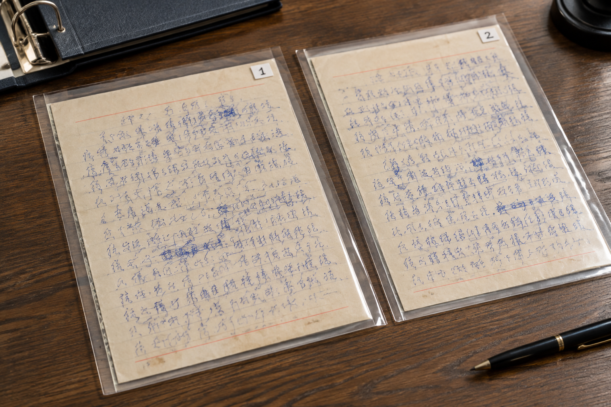

西安笔迹鉴定资料夹里，两张相似照片真的是同一页吗
文件名一样、字迹相近，仍可能对应不同页面。整理照片时，页码和纸面细节能帮助核对，但不能代替来源记录。

先核对整页内容
西安笔迹鉴定资料常经历多次拍摄和转发，同一文件夹里可能既有全页照片，也有局部截图。判断是否对应同一页，可先核对文字顺序、行尾和页面布局。仅凭几个字相似，不能确定图片就是同一个来源。
纸面细节作为辅助线索
折痕、孔位和边缘缺口能帮助定位，但拍摄裁切、遮挡和清晰度也会影响可见情况。可以把可能对应的图片暂列一组，保留原始文件名，核实后再建立对应表。不要为了目录整齐，提前把疑似重复的照片全部删掉。
把不同用途的参考分组
模仿笔迹长文、模仿签名姓名样本和模仿签字表格落款，应分别说明内容范围。来自同一份文件的照片可以关联，但不能因为主题相同就合并成一个样本。每张图对应哪一页、哪一处，清单中写清楚即可。
重复与近似要区分
完全相同的文件可以记录副本关系，内容相近但尚未核实来源的文件应继续保留。接收到补充原图后，再更新对应信息。这样既不会把重要材料误删，也不会让阅读者把同一张照片的多个版本误认为多次自然书写。